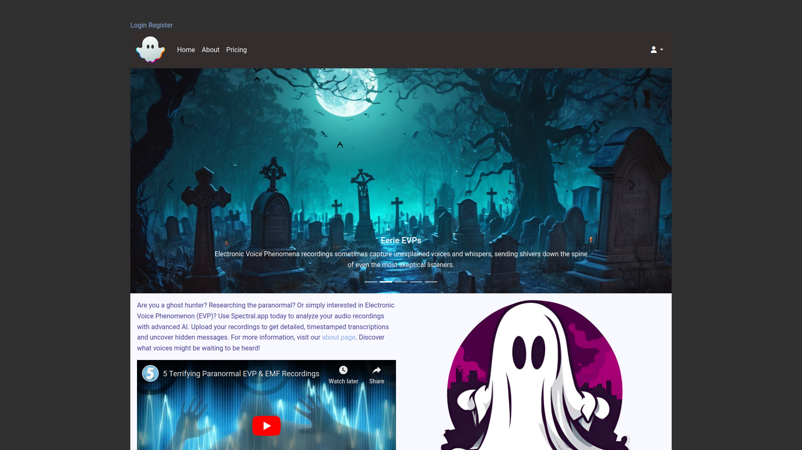
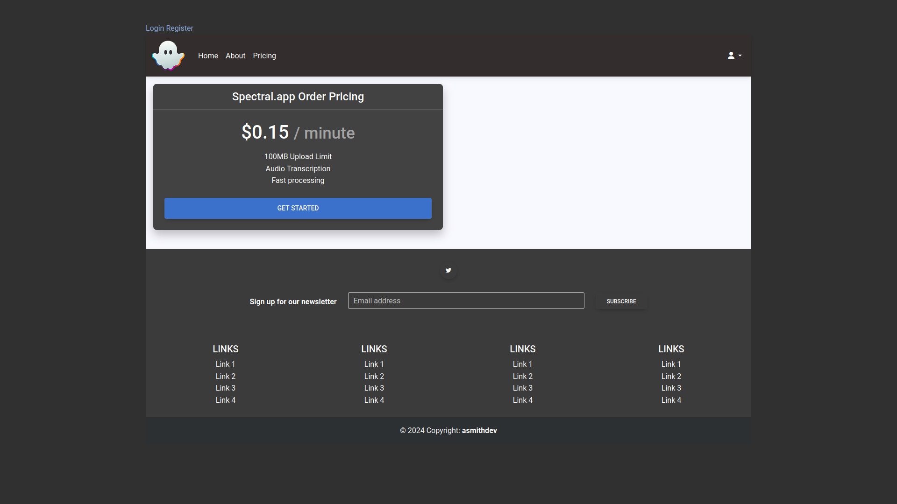

1. Introduction
Company: Spectral.app
Concept: Spectral offers EVP (Electronic Voice Phenomenon) detection using cutting-edge AI technology, catering to the needs of ghost hunters, paranormal researchers, and enthusiasts.
2. Problem Statement
Transcription of audio recordings is traditionally time-consuming and inefficient.
Challenges include:
- Lack of efficient tools for accurate speech-to-text transcription.
- Manual transcription is labor-intensive and prone to errors.
- Existing transcription software may struggle with background noise or poor audio quality.
- Difficulty in timestamping and organizing transcriptions for analysis.
- Limited accessibility to advanced transcription technology for paranormal research.
3. Solution
Spectral App: A SaaS platform providing AI-driven analysis of audio recordings to detect and transcribe EVPs.
Features:
- Detailed, timestamped transcriptions
- User-friendly interface
- Fast processing times

4. Technology Stack
Backend: Ruby on Rails, PostgreSQL, Redis, Sidekiq
Frontend: Bootstrap 5, Material Design Bootstrap
AI: DeepSpeech for speech-to-text analysis
Storage & Email: Amazon S3, Amazon SES
5. Revenue Model
Pricing: $0.15 per minute of audio processed. ($9 per hour of audio processed)
Payment Processing: Using Stripe for microtransactions.
Domain Cost: $150 per year for a premium domain.
Hosting:Dedicated server with AI capable GPU.
Other:Amazon Simple Email Service, Amazon Simple Storage Service.

6. Market Opportunity
Target Audience: Our target audience includes ghost hunters, paranormal researchers, and enthusiasts interested in paranormal phenomena.
Market Size: The market opportunity is significant:
- There is a growing interest in paranormal research and ghost hunting communities worldwide.
- TV shows involving paranormal research, such as Ghost Hunters and Paranormal Lockdown, have gained immense popularity, driving curiosity and engagement in the field.
- Online communities and forums dedicated to paranormal investigations are thriving.
- There's an expanding market for entertainment and experiences related to the supernatural.
- Opportunities for cross-promotion with related industries such as tourism and entertainment are promising.
7. Competitive Advantage
Proprietary AI: We have developed a custom-built AI specifically tailored for accurate EVP detection, ensuring reliable results.
User Experience: Our platform offers an intuitive and accessible user interface, providing a seamless experience for all users.
Scalability: Our platform is built on a robust and modern tech stack, allowing for high performance and seamless scalability to meet increasing demands. We can easily adapt to growing user bases and expand our services without compromising performance.
8. Marketing Strategy
Channels: We will utilize various channels including social media, paranormal forums, and communities to reach our target audience.
Content: Our marketing content will include engaging blog posts, informative case studies, and compelling user testimonials to showcase the effectiveness of our platform.
Partnerships: We plan to collaborate with paranormal research groups and influencers to increase our visibility and credibility within the community.
Social Media Presence: We already have a Twitter account with 1 organic follower. We will leverage social media platforms to engage with our audience and share valuable content.
9. Financial Projections
Revenue Growth: Our revenue growth is projected based on the increasing user base and per-minute processing charges. As our user base expands and the demand for our service grows, we anticipate a steady increase in revenue.
Cost Management: We ensure efficient cost management through optimized hosting and domain costs, as well as the efficient utilization of AWS services, helping us maintain healthy profit margins.
Peak Revenue Estimate: Current calculations estimate our peak revenue to be roughly $400,000 per year per server, considering the current hardware configuration. This represents the starting point limit, and we anticipate potential for further growth beyond this initial estimate.
10. Team
Founder: Austin Smith
Expertise: Skilled in AI development, web development (Ruby on Rails, Bootstrap), and cloud services (AWS). Over a decade of technical experience.
Experience:
Austin Smith is a seasoned technical leader and entrepreneur with over a decade of experience in software development. His background includes:
- Successfully developed and deployed various SaaS applications.
- Led and managed cross-functional teams of engineers to deliver high-quality products.
- Provided mentorship and guidance to junior developers, fostering their professional growth.
- Founded and operated a successful business, demonstrating strong leadership and business acumen.